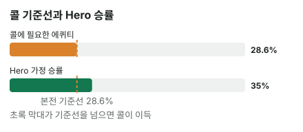

안녕하세요. 오늘은 리버에서 2/3팟 벳을 맞는 장면이에요.
B15에서 벳 크기별 필요 에퀴티 표를 만들었죠. 오늘은 그 표의 2/3팟 줄을 실제 핸드에 꺼내 써 봐요. Hero 핸드는 탑페어 A 키커, 꽤 좋은 핸드인데 리버 카드 한 장이 보드를 무섭게 바꿔 놨어요. 이럴 때 무엇을 보고 콜을 정하는지 처음부터 따라가 볼게요.
이 글에서 배울 것
- 2/3팟 벳의 필요 에퀴티 28.6%가 어디서 나오는지, "7번 중 2번"이라는 말로 직접 따져 보기
- 좋은 핸드라도 상대가 벳한 핸드들 사이에서 이길 확률은 따로 봐야 하는 이유
- 승률과 기준선의 차이가 곧 이득의 크기라는 것, 그리고 벳이 커지면 그 차이가 어떻게 줄어드는지
오늘의 핸드
Hero (BTN 자리 · 스택 100BB)


프리플랍
Hero 2.5BB 오픈 → SB 폴드 → 상대(BB) 콜
팟 5.5BB
플랍 · 팟 5.5BB


상대 체크 → Hero 1.75BB 벳 → 상대 콜
Hero는 J 원페어, 보드에서 가장 높은 카드와 짝이 맞은 탑페어예요. 키커(같은 페어끼리 붙을 때 승부를 가르는 나머지 카드)도 A라서 탑페어 중에서도 센 편이에요.
턴 · 팟 9BB


상대 체크 → Hero 체크
리버 · 팟 9BB


상대가 먼저 6BB 벳(팟의 3분의 2) → Hero는 콜? 폴드?
리버 5로 보드에 3·5·6·8이 깔려서, 상대가 두 장으로 스트레이트를 만들었을 수도 있는 보드가 됐어요. Hero 핸드 이름은 그대로 탑페어예요.
결론부터 말할게요. 오늘 가정에서는 콜이 이득입니다. 콜할 때마다 평균 1.35BB씩 벌어요.
왜 그런지 4단계로 볼게요. 기준선을 구하고, 승률을 정하고, 비교하고, 돈으로 확인하는 순서예요.
1단계. 콜하려면 몇 번 이겨야 하나 (필요 에퀴티)
용어 한 줄
필요 에퀴티는 "콜해서 본전이 되려면 최소한 이만큼은 이겨야 한다"는 확률이에요. 에퀴티는 이 팟에서 이길 확률이고요.
참가비를 내는 내기로 생각해 보기
콜은 참가비를 내고 이기면 상금을 받는 내기와 같아요.
- 참가비: Hero 콜 6BB
- 이기면: 원래 팟 9BB와 상대 벳 6BB를 합친 15BB가 순이익으로 남아요
참가비가 비쌀수록 더 자주 이겨야 남겠죠. 그럼 오늘 참가비에선 몇 번 이겨야 본전일까요?
7번 중 2번이면 본전
우리가 낼 돈 : 이기면 얻는 돈을 보면 돼요. 6 : 15는 2 : 5예요.
"2번 이기는 동안 5번 져도 본전"이라는 뜻이에요. 정말 그런지 7번 콜해 볼게요.
- 2번 이김: 15BB × 2 → 30BB 벌어요
- 5번 짐: 6BB × 5 → 30BB 잃어요
번 돈과 잃은 돈이 똑같죠. 그래서 2 + 5 = 7번 중 2번이 본전이에요.
공식으로 한 줄에
B06에서 배운 공식, 우리가 낼 돈 ÷ 콜한 뒤 전체 팟으로 쓰면 이렇게 돼요.
필요 에퀴티 = 6(Hero 콜) ÷ (9(원래 팟) + 6(상대 벳) + 6(Hero 콜)) = 6 ÷ 21 = 28.6%
B15 표의 2/3팟 줄과 같은 값이에요. 하프팟 25%보다는 높고, 팟벳 33.3%보다는 낮은 자리죠. 팟이 9BB가 아니어도 2/3팟이면 언제나 이 값이에요.
2단계. 오늘의 가정 — Hero가 이길 확률
상대가 벳하는 핸드를 두 묶음으로
기준선은 구했으니, 이제 Hero가 실제로 몇 번 이기나예요. 리버에 상대가 먼저 벳했다면 그 핸드는 두 묶음으로 나눌 수 있어요.
① Hero를 이기는 핸드. 보드 J♠ 8♦ 3♥ 6♣ 5♠에서 A♥J♣를 이기는 핸드를 빠짐없이 세면 이래요.
- J보다 높은 포켓페어 QQ·KK·AA
- 보드 숫자와 같은 포켓페어로 만든 셋: JJ·88·66·55·33
- 보드 두 장과 짝이 맞은 투페어: J8·J6·J5·J3·86·85·83·65·63·53
- 스트레이트: 74(4-5-6-7-8), 97(5-6-7-8-9), 42(2-3-4-5-6)
② Hero가 이기는 핸드. 상대가 Hero를 접게 하려는 블러프나, 자기 핸드가 이긴다고 보고 거는 더 약한 핸드예요.
- 턴에 스트레이트를 노리다 리버 5에 빗나간 T9·QT·T7 같은 드로우(이렇게 한 장만 더 오면 완성되던 미완성 핸드를 드로우라고 해요)
- KJ·QJ처럼 키커가 낮은 J, 8·6·5·3이 들어간 더 낮은 페어, TT·99 같은 작은 포켓페어
다른 AJ와는 비겨서 팟을 나눠요. 보드에 스페이드가 두 장뿐이라 플러시는 없어요.
리버 5가 바꾼 것
같은 드로우라도 리버 5에 갈렸어요. 턴에 6-7-8-9를 들고 5나 T를 기다리던 97, 5만 기다리던 74·42는 리버 5로 스트레이트가 됐어요. 반대로 T9·QT·T7은 기다리던 카드가 안 와서 빗나갔죠. 리버 5 한 장이 ①을 늘렸고, 이 카드에 빗나간 드로우는 ②의 블러프 후보로 남았어요.
35%라는 가정
상대 손은 볼 수 없으니, 오늘은 "이 상대가 이렇게 벳할 때 Hero가 이길 확률은 35%"라고 가정할게요. 20번 중 7번이에요.
두 묶음으로 바꿔 말하면, 상대가 이 리버에 20번 벳하면 13번은 ①, 7번은 ②라는 뜻이에요(다른 AJ와 비기는 경우는 빼고 셀게요). 왜 ②가 섞여 있다고 볼 수 있는지는 아래 질문 절에서 풀어요. 몇 가지씩인지 직접 세는 법은 중급 I27에서 배워요.
3단계. 나란히 놓고 비교하기
B14에서 연습한 그 비교예요.
| 확률 | |
|---|---|
| 콜에 필요한 에퀴티 | 28.6% |
| Hero 가정 승률 | 35% |

35% > 28.6%. 필요한 것보다 더 자주 이기니까 콜이에요.
4단계. 돈으로 바꿔 보기 — 20번 콜하면?
35%는 20번 중 7번이에요.
- 7번 이김: 한 번에 15BB씩(원래 팟 + 상대 벳) → 105BB 벌어요
- 13번 짐: 한 번에 Hero 콜 6BB씩 → 78BB 잃어요
- 합계: 105 − 78 = +27BB → 한 번에 평균 +1.35BB
콜 평균 손익 = 0.35 × 15 − 0.65 × 6 = 5.25 − 3.9 = +1.35BB
폴드하면 이 팟에 더 넣지도 받지도 않으니 0BB예요. 그래서 콜이 폴드보다 한 번에 1.35BB 이득이에요.
왜 그럴까: 좋은 핸드인데 왜 35%밖에 안 될까요?
핸드의 세기는 "상대가 벳한 핸드들" 사이에서 다시 매겨져요
A♥J♣는 이 보드에서 꽤 높은 핸드예요. 그런데 오늘 승률은 35%, 3번 중 1번 남짓이에요.
이유는 상대가 벳을 했다는 데 있어요. 상대가 가질 수 있는 모든 핸드 중에서라면 탑페어 A 키커는 많은 핸드를 이겨요. 하지만 상대가 리버에 먼저 걸었다면, 오늘 가정에서는 아무것도 없는 핸드 중 일부는 그냥 체크했다고 봐요. 벳한 핸드만 모아 놓으면 ① 쪽이 두꺼워져요.
그래서 "내 핸드가 좋은가"와 "상대가 벳한 핸드들을 이기는가"는 다른 질문이에요. 콜 판단에 쓰는 건 뒤쪽이에요.
이득의 크기는 "차이"가 정해요
B14에서 평균 손익을 한 줄로 쓰는 법을 봤죠. (우리 승률 − 필요 에퀴티) × 콜한 뒤 팟이었어요. 오늘 숫자를 넣어 볼게요.
(0.35 − (2/7)) × 21 = 1.35BB
4단계에서 20번 콜해서 구한 값과 같아요. 여기서 (2/7)이 기준선 28.6%예요.
이 식이 알려 주는 건, 승률이 기준선보다 얼마나 높은가가 이득의 크기라는 거예요. 오늘은 그 차이가 크지 않아서, 이득도 콜 한 번에 1.35BB로 크지 않아요. 승률을 조금만 낮게 봐도 결론이 흔들릴 수 있는 콜이라는 뜻이죠.
벳이 커지면 차이가 줄어요
같은 핸드라도 상대가 더 크게 걸면 기준선이 올라가요. 승률은 그대로인데 기준선만 올라가니, 괄호 안 차이가 줄어들고 이득도 줄어요. 차이가 0이 되는 벳 크기에서는 콜이 본전이 되고, 그보다 크면 손해예요. 이 지점은 연습 문제 3에서 직접 찾아봐요.
자주 하는 실수
실수 1. "탑페어 A 키커니까 생각할 것 없이 콜" 핸드 이름으로 정하는 습관이에요. 오늘 리버 5 한 장으로 74·42·97이 스트레이트가 됐고, 55는 셋, J5·65·85·53은 투페어가 됐어요. 턴까지 Hero가 이기던 핸드 중 일부가 리버에 Hero를 앞지른 거예요. 대신 리버가 깔리면 "이 카드로 누가 나를 앞질렀나"부터 보드를 다시 훑어요.
실수 2. 지금 팟으로 나누기 필요 에퀴티를 6 ÷ 15 = 40%로 계산하는 실수예요. 15BB는 Hero가 콜하기 전 팟이라, Hero 콜 6BB가 빠져 있어요. 이렇게 하면 기준선을 실제(28.6%)보다 훨씬 높게 잡아서, 오늘처럼 이득인 콜을 버리게 돼요. 대신 분모는 언제나 Hero 콜까지 더한 21BB예요.
실수 3. 2/3팟을 하프팟처럼 "4번 중 1번"으로 어림하기 테이블에서 서두르면 벳 크기를 대충 보고 25%를 떠올릴 수 있어요. 그러면 기준선을 실제(28.6%)보다 낮게 잡게 되고, 승률이 기준선 가까이에 있을 때는 그 차이로 결론이 틀어질 수 있어요. 대신 벳을 보면 "팟의 몇 분의 몇"을 먼저 정확히 정하고 B15 표의 줄을 꺼내요.
"턴엔 체크하던 상대가 리버에 먼저 벳했어요. 센 핸드라는 신호 아니에요?"
좋은 질문이에요. 그럴 수도 있어요. 리버 5로 74·42·97이 스트레이트가 됐으니, 맞춘 핸드로 바로 거는 거라면 센 핸드죠.
하지만 반대 이유도 있어요. Hero가 턴에 체크했으니, 상대 눈에는 Hero가 약해 보일 수 있어요. 그러면 빗나간 드로우로 Hero를 접게 하거나, 약한 페어로 조금이라도 받으려고 먼저 걸 수 있어요.
그래서 신호 하나로 결론을 내지 않아요. 그 신호를 보고 ①과 ②의 비율을 어림하고, 그 비율을 기준선 28.6%와 비교하는 거예요.
숫자가 뒤집히는 지점
기준은 두 가지예요.
- 상대 벳 크기가 바뀌면: 필요 에퀴티를 다시 구해요. 그 값이 Hero 승률(35%)보다 높아지는 벳부터 폴드예요
- Hero 승률이 바뀌면: 지금 기준선(28.6%)보다 높은지 낮은지만 보면 돼요
선생님의 한마디
리버에서 벳을 맞으면 보드 → 벳 크기 → 비교 순서로 생각해요.
- 리버 카드가 깔리는 순간, 칩을 만지기 전에 보드를 한 번 더 보기
- 벳이 나오면 칩 더미를 팟 옆에 두고 절반인지 3분의 2인지 눈으로 맞춰 보기
연습 문제 (같은 보드, 같은 Hero 핸드)
홀덤학습 에퀴티 계산기에서 내 카드를 고른 뒤 [콜 수익] 칸에 지금 팟(상대 벳 포함)과 콜 금액을 넣으면 필요 에퀴티가 나와요. 지금 팟 칸에는 팟 9BB에 상대 벳을 더한 값을 넣어요.
문제 1. 벳은 6BB 그대로인데, 이 상대는 리버에 먼저 걸 때 ① 쪽 핸드가 훨씬 많아서 Hero 가정 승률이 25%라면?
정답 보기
폴드. 25% < 28.6%. 콜 손익 = 0.25 × 15 − 0.75 × 6 = 3.75 − 4.5 = −0.75BB. 같은 벳, 같은 핸드여도 상대가 섞는 ②가 줄면 결론이 바뀌어요.
문제 2. Hero 가정 승률은 35% 그대로인데, 상대가 9BB(팟벳)를 걸었다면?
정답 보기
콜. 필요 에퀴티 = 9 ÷ (9 + 9 + 9) = 33.3%, 35%가 조금 더 커요. 이기면 원래 팟 9BB와 상대 벳 9BB를 합친 18BB를 벌어요. 콜 손익 = 0.35 × 18 − 0.65 × 9 = 6.3 − 5.85 = +0.45BB. 차이로 보면 (0.35 − (1/3)) × 27 = 0.45BB. 기준선이 올라가 차이가 줄어서, 이득이 1.35BB에서 0.45BB로 작아졌어요.
문제 3. (도전) Hero 승률 35% 그대로일 때, 상대가 10.5BB를 걸면 콜은 이득일까요, 손해일까요?
정답 보기
본전이에요. 필요 에퀴티 = 10.5 ÷ (9 + 10.5 + 10.5) = 10.5 ÷ 30 = 35%, 승률과 딱 같아요. 콜 손익 = 0.35 × 19.5 − 0.65 × 10.5 = 6.825 − 6.825 = 0BB. 팟보다 조금 큰 이 벳이 오늘 가정의 경계예요. 상대가 이보다 크게 걸면 같은 35%로도 폴드가 돼요.
핵심 정리
- 2/3팟 벳의 기준선은 28.6%(7번 중 2번). 낼 돈 : 이기면 얻는 돈 = 2 : 5에서 나와요
- 필요 에퀴티의 분모는 Hero 콜까지 더한 콜한 뒤 팟이에요
- Hero 승률은 핸드 이름이 아니라 상대가 벳한 핸드들 사이에서 매겨요. 리버 카드가 그 안의 구성을 바꿔요
- 이득의 크기 = (승률 − 기준선) × 콜한 뒤 팟. 벳이 커지면 기준선이 올라가 차이가 줄어요
정리하며
오늘은 리버 2/3팟 벳에 탑페어 A 키커로 콜할지 정했어요.
6 : 15, 곧 2 : 5에서 "7번 중 2번", 기준선 28.6%를 직접 따져 봤고, 상대가 벳한 핸드를 Hero를 이기는 쪽과 Hero가 이기는 쪽으로 나눠 가정 승률 35%를 놓았죠. 35%가 28.6%보다 커서 콜이지만, 차이가 크지 않아 이득도 1.35BB였어요.
다음에 리버에서 좋은 핸드로 벳을 맞으면, 계산기를 떠올리기 전에 리버 카드가 상대의 어떤 핸드를 도왔는지부터 보세요.
다음 글 B17에서는 계산을 잠시 내려놓고, 리버에서 콜을 한 다음에 벌어지는 일, 쇼다운에서 누가 먼저 카드를 보여 주는지를 다뤄요.
AI 작성 · 숫자는 계산 검증 · 가정 승률 기준 · 리버 마지막 결정이라 콜 손익이 최종 결과